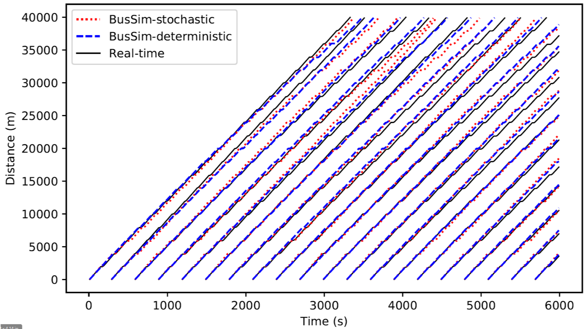
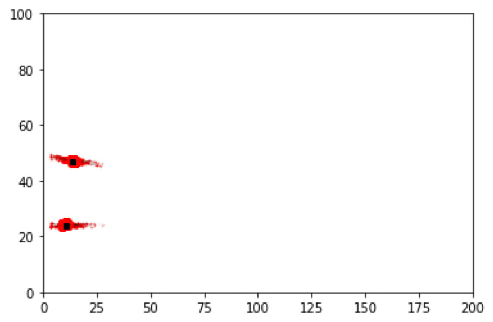

Data-driven cities: bringing together machine learning and city simulation
Minh Kieu
University of Leeds
m.l.kieu@leeds.ac.uk
These slides:
https://leminhkieu.github.io/p/2019-DynamicCities-UrbanAnalytics.html
Cities are changing rapidly, forcing policy makers to make decision faster and more frequent
How do science support policy makers?
We need a platform to evaluate future policies:
Transport – how to reduce congestion?
Pollution – who is being exposed? Where are the hotspots?
Economy – can we attract more people to our city centre?
Health - can we encourage more active travel?
Data of individuals are key to explain the urban dynamics
Smart cities and the data deluge

Abundance of real-time analysis of cities, but limited forecasting. E.g.:
MassDOT Real Time Traffic Management system (Bond and Kanaan, 2015)
Centro De Operacoes Prefeitura Do Rio (in Rio de Janeiro)
Machine learning will probably help
E.g. short-term traffic forecasting (Vlahogianni et al. 2014)
But black box is a drawback - How to run diverse scenarios?
How to combine messy, biased, disparate data into a system that can evaluate 'what-if' scenarios?
Uncertainty
The reality is dynamic: Non-linear models predict near future well, but diverge over time.
The reality is stochastic: No set of parameters would perfectly explain the real system.
There is no systematic mechanism to incorporate new data into agent-based models
Data Assimilation for Agent-Based Models

Improve estimates of the true system state by combining noisy, real-world observations and model estimates of the system state
Example 1
Bus Simulation with a Particle Filter
Context: simulate bus routes in real time
We have GPS bus positions, but to make good term forecasts we need to be able to infer other factors
Number of people waiting at bus stops
Number of people on the bus
Surrounding traffic levels
Etc.
Aim: test a particle filter as the means of assimilating real-time GPS positions into a model.
Data Assimilation on Bus Simulation

Particle Filter
Create N realisations of the model ('particles')
Run each particle forward in time until you receive some new data
Compare the particles to the observation and:
Weight each particle depending on how close it is to the observations
Resample the population of particles using the weights (good particles are kept, bad ones disappear)
Repeat
Bus Simulation
Bus Simulation - No Data Assimilation
Bus Simulation with a Particle Filter
Example 2
Crowd Simulation with a Particle Filter
Context: simulate a crowd in real time
What methods can we use to assimilate data?
How much data do we need?
Track every individual?
Track some individuals?
Just aggregate counts (e.g. number of people passing a footfall camera)
Case study: a simple, hypothetical train station (Station Sim)
Crowd Simulation with a Particle Filter
Crowd Simulation
Making impacts with a pilot study
Clean Air Charging Zone in Leeds

Next step?
Responsive & Dynamic planning using Reinforcement Learning
Symposium: Agent-Based Modelling of Urban Systems (ABMUS)
Auckland, New Zealand (May 2020)
Pre-symposium workshop in Melbourne with policy makers
Information to be announced in SIMSOC and mailing list